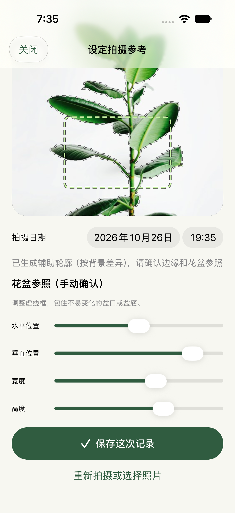

留好第一次的参照
建立植物档案，拍摄或导入第一张照片。确认辅助轮廓，再选择花盆上相对稳定的区域，为下一次构图留下参照。

从一点习惯，到一段成长
照片是起点。相近的构图、合适的拍摄节奏，加上当天的观察，让它成为值得回看的记录。
建立植物档案，拍摄或导入第一张照片。确认辅助轮廓，再选择花盆上相对稳定的区域，为下一次构图留下参照。
根据拍摄对象、记录周期或希望的成片时长制定计划，联动拍照提醒；也能加入浇水、施肥、修剪等养护任务。
照片、观察与已完成的养护留在时间线里。对比第一次与最新的画面，回看一段记录，再决定哪些照片进入影片。
让参照跟得上生长
半透明参照与辅助轮廓，帮你找回相近的构图。叶片重叠或背景复杂时，仍可以亲自确认和调整参照。

保留原来的样子，也留一点选择
先预览，再导出。保留全部原片，或为这一段照片选择合适的矫正与节奏。
选择参考区域去闪烁、颜色对齐与植物颜色保护。先看稳像的裁切代价，再决定是否应用。
按实际拍摄时间组织影片，也能调整部分片段的速度。精彩片段先推荐、由你确认；AI 补帧可选开启，生成片段保留可识别标记。
AI 会生成中间画面，可能扭曲叶片或推测并未拍下的过渡，不能用于测量生长或替代真实照片。无论是否选择矫正，原始照片都会在 App 中保留。
导出 .plantbackup 归档，恢复时检查文件，并建立独立副本；不会合并或覆盖已有植物档案。
私人 iCloud 备份默认关闭。开启后会上传照片与植物资料，占用你的 iCloud 空间，并在 App 前台运行时触发。需要主动恢复，不是多设备实时同步。
日历与提醒事项导出、影片分享和备份保存位置，由你发起选择。副本交给其他 App 或服务后，也由其继续管理。
为耐心观察而做
植物记录 iPhone 与 iPad 版本正在准备发布。关于使用与资料处理的问题，可以联系支持。